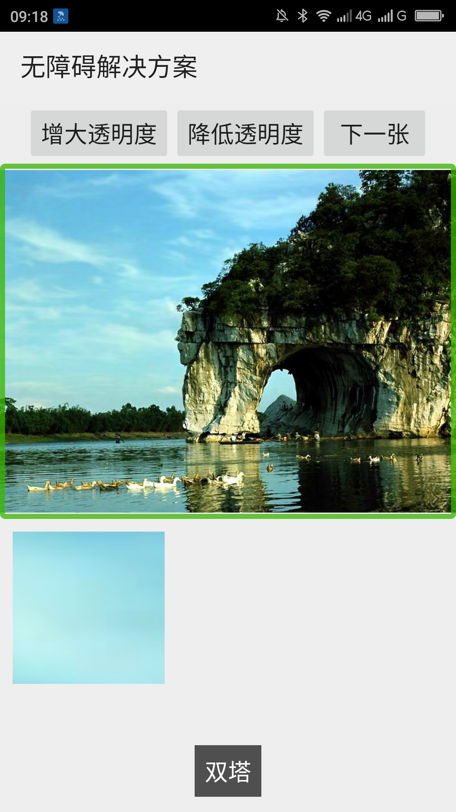
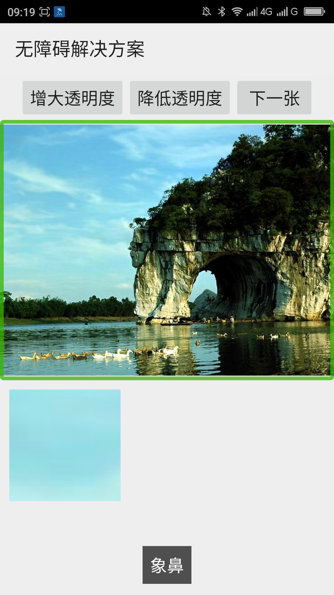

图片视图（ImageView）展示的图片有变化的时候替代文本随之变化____20160520
【问题描述】
图片视图（ImageView）展示的图片有变化的时候，如果替代文本没有变化的话，用户无法知道当前图片视图展示的是什么内容，例如，一个图片视图展示了一座双塔，变成其他的，但是替代文本还是“双塔”，用户无法知道图片已经变化了。
【问题解决方案描述】
当展示的图片变化的时候利用视图的setContentDescription()方法动态的设置替代文本，这样替代文本才能和展示的图片匹配。用户才能很好的知道当前展示的什么图片。
【前后效果图对比】
|  |  |
| 优化前，所有图片聚焦时，朗读“双塔”； | 优化后，图片聚焦时，朗读当前图片的主题，如图所示“象鼻”； |